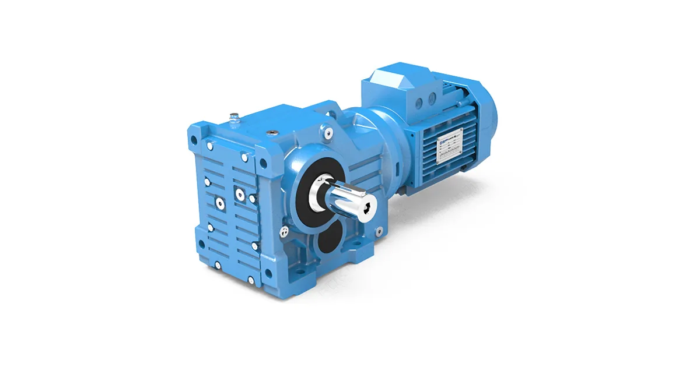
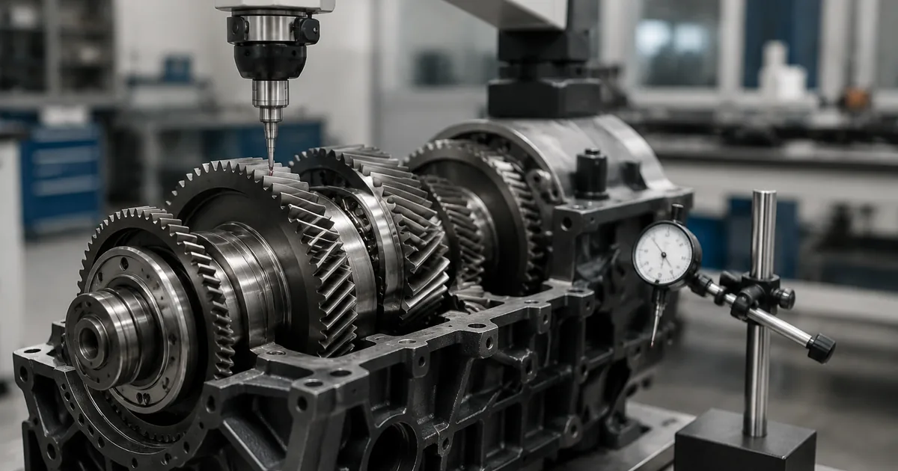

Собственное производствоПромышленные редукторы для производителей оборудования•Отгрузка по всей России•Аналоги SEW, NORD, Bonfiglioli без переделки рамы•Расчёт и КП за 15 минут•Гарантия 36 месяцевПромышленные редукторы для производителей оборудования•Отгрузка по всей России•Аналоги SEW, NORD, Bonfiglioli без переделки рамы•Расчёт и КП за 15 минут•Гарантия 36 месяцев
Главная›Блог›Вибрация и шум редуктора Flender: как читать симптомы
Диагностика
Вибрация и шум редуктора Flender: как читать симптомы
Опыт инженеров Завода Редукторов · чтение ~8 минут
Редуктор Flender перед отказом меняет акустическую картину и уровень вибрации — это позволяет перевести ремонт в разряд плановых работ. Ниже — как читать эти сигналы применительно к немецким сериям H, B и K и что из этого следует при подборе аналога ZR. Никаких новых чисел: только ориентиры из исходных данных и инженерная логика.
Сразу о главном. Готовой таблицы «типоразмер Flender → типоразмер ZR» мы не публикуем и не можем вывести её из каталога производителя: взаимозаменяемость определяется присоединительными и габаритными размерами, а не совпадением момента. Два редуктора с одинаковым моментом могут не встать на одну плиту. Поэтому по марке Flender подбор ведёт инженер — по шильду, фото узла или габаритному чертежу. Наш аналог ZR считаем под задачу, цена — по запросу.
Почему Flender — это не только про немецкое качество, но и про логистику замены
Flender — марка из Германии, серии H, B, K. Для российского завода это означает, что при отказе узла приходится иметь дело с импортной номенклатурой: оригинальные подшипники и зубчатые пары ставятся под заказ, а срок их поставки может перекрыть срок изготовления нового редуктора. В такой ситуации расчёт «ремонт против замены» часто складывается не в пользу ремонта — считать надо в простое, а не только в стоимости комплекта запчастей.
Мы работаем с обоими вариантами: возим оригинал под заказ и делаем аналог ZR. Это не взаимоисключающие предложения — зарабатываем на любом исходе, поэтому подсказываем, что выгоднее в конкретном случае. Но решение принимается по геометрии и условиям работы, а не по названию на шильде.
Как отличить допустимый шум от предотказного состояния
Ровный однотонный шум зацепления — это рабочее состояние, а не дефект. Норму по вибрации задаёт ГОСТ ИСО 10816: для большинства промышленных приводов средней мощности на жёстком основании граница «хорошо/удовлетворительно» лежит в районе 2,8 мм/с по среднеквадратичной виброкорости, а выше 7,1 мм/с — зона, где длительно работать нельзя. Но абсолютная цифра вторична по отношению к динамике: привод, годами работающий на 4 мм/с стабильно, менее тревожен, чем тот, что за месяц ушёл с 1,5 на 3,0.
Диагностика по звуку и характеру вибрации сужает поиск до одного узла в большинстве случаев, хотя и не заменяет виброанализ со спектром. Ниже — таблица-шпаргалка по симптомам, которую можно использовать до обращения к инженеру.
Симптом → вероятная причина → что делать
Симптом
Вероятная причина
Что делать
Вой с изменением тона по нагрузке
Дефект зацепления, износ зубьев
Осмотр пятна контакта, анализ масла на стружку
Периодический стук с частотой вращения
Скол зуба, повреждение шпонки
Вскрытие смотрового люка
Гул, растущий при нагреве
Износ подшипника
Спектр вибрации, замер температуры узла
Шум пропадает при снятии нагрузки
Несоосность привода
Проверка соосности индикаторами
Вибрация с частотой сети
Проблема двигателя, а не редуктора
Пуск редуктора от другого привода
Скрежет при пуске, потом тишина
Масляное голодание на старте
Проверка уровня и вязкости масла
Несоосность и перекос: почему это первая причина обращений
По нашей статистике рекламаций несоосность и перекос при монтаже дают больше обращений, чем все производственные дефекты вместе взятые. Характерный признак — вибрация в осевом направлении и повышенный износ манжет со стороны муфты. Лечится это не заменой редуктора, а выставлением привода.
Если после ремонта вибрация вернулась через месяц, почти наверняка дело в основании или тепловом уходе, а не в самом редукторе. В таких случаях замена узла не даёт устойчивого результата.

Редуктор Flender: коническо-цилиндрический исполнение
Подшипники, масло и что первично
Износ подшипника даёт нарастающий гул и локальный нагрев корпуса в зоне опоры. Ранняя диагностика — по спектру вибрации, где появляются характерные подшипниковые частоты; поздняя — по стружке в масле и по температуре. Часто первопричина не в самом подшипнике, а в масле: не та вязкость, просроченный интервал замены, вода в картере.
Анализ пробы масла стоит дёшево и часто отвечает на вопрос быстрее разборки. Это не панацея: если изношены зубья, смена масла только отсрочит вскрытие.

Контроль состояния привода
Когда ремонт Flender дороже замены на аналог ZR
Для импортных марок вроде Flender расчёт часто не в пользу ремонта: срок поставки оригинальных подшипников и зубчатых пар может превышать срок изготовления нового редуктора, а стоимость комплекта запчастей подбирается к цене изделия целиком. Считать надо в простое, а не только в деньгах за узел.
Аналог ZR проектируем под задачу по присоединительным размерам. Переходной фланец или спецвал — под вашу геометрию. Подбор по марке Flender ведёт инженер: шильд, фото узла или габаритный чертёж.
Какие данные собрать перед заказом
Что нужно инженеру для подбора и где это взять
Параметр
Где взять
Зачем нужен
Полное обозначение с шильда
табличка на корпусе редуктора
определяет серию Flender и типоразмер
Мощность и обороты двигателя
шильд двигателя или паспорт привода
задаёт входную ступень и запас
Обороты на выходе
технолог или расчёт по механизму
через них считается передаточное число
Монтажное положение
по факту установки на объекте
определяет уровень масла и расположение пробок
Присоединительные размеры
замер или габаритный чертёж
главное условие взаимозаменяемости
Характер нагрузки и режим
технолог, паспорт механизма
через него выбирается сервис-фактор
Доставка, оплата и гарантия
Отгружаем по всей России транспортными компаниями, самовывоз — со склада в Челябинске. Оплата по счёту для юридических лиц, для новых клиентов возможна частичная предоплата. На изделия собственного производства ZR даём гарантию 36 месяцев и передаём паспорт с фактическими параметрами. Условия и сроки — на страницах доставки и цен: конкретную стоимость называем после подбора, потому что она зависит от исполнения, передаточного числа и комплектации двигателем.
Не уверены в подборе? Пришлите фото шильдика на zr@zavod-red.ru — инженер прочитает обозначение, сверит присоединительные размеры и пришлёт расчёт. Или соберите вариант сами в калькуляторе подбора: там задаются диапазоны по мощности, оборотам, моменту и передаточному числу.
Частые вопросы
Какая вибрация считается допустимой?
Ориентир по ГОСТ ИСО 10816: до 2,8 мм/с — хорошо, свыше 7,1 мм/с — работать нельзя. Но важнее динамика: рост показателя вдвое за месяц тревожнее стабильного среднего значения.
Редуктор загудел, но не греется. Опасно?
Гул без нагрева часто указывает на зацепление или несоосность. Померьте вибрацию и проверьте соосность до того, как разбирать редуктор.
Можно ли работать с повышенной вибрацией до планового ремонта?
В зоне «удовлетворительно» — можно с контролем. Выше 7,1 мм/с риск лавинного разрушения: осколок зуба выводит из строя всю ступень.
Поможет ли смена масла?
Если причина в вязкости, загрязнении или воде — да, и заметно. Если изношены подшипники или зубья — нет, масло только отсрочит разборку.
Как понять, шумит редуктор или двигатель?
Расцепите муфту и запустите двигатель отдельно. Если шум остался — дело не в редукторе.
Делаете ли вы диагностику на месте?
По обозначению, фото и описанию симптомов инженер даёт заключение дистанционно. Выезд обсуждается отдельно и зависит от региона.